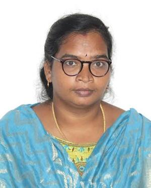

Dr. T. Raja Sree
Ph.D. (CSE, NIT Trichy)
M.Tech (IT, Anna University)
B.Tech (IT, Anna University)
Contact
1/2 Athikattuvilai, Manikettipottal post
Kanyakumari District, Tamil Nadu – 629501
Email: rajasree.t@vit.ac.in | trajasree87@gmail.com
Phone: +91 9789599698
ORCID: 0000‑0002‑6960‑3307
ResearchGate: Raja Sree2
Research Interests
- Distributed Computing
- Cloud Computing
- Cloud–Fog Security
Education
Thesis: Detection of HTTP Flooding Attacks in Cloud
Supervisor: Dr. S. Mary Saira Bhanu
CGPA: 9.56 (Gold Medalist, University First Rank)
Percentage: 82%
Peer‑Reviewed Publications
- Sam Prince Franklin S, Mary Shamala L., T. Raja Sree – Decentralized certificate issuance and verification using Ethereum blockchain, JNCA (SCI, IF 7.7)
- Ashank Priyadarshi, T. Raja Sree – Multi-tier Blockchain-based Land Registry using Fog Computing, IEEE Access (SCI, IF 3.4)
- S. Deepshika, T. Raja Sree – Wearable Device for COVID‑19 detection, IETE Journal of Research (SCI, IF 2.810)
- T. Veni & T. Raja Sree – Mobility-aware secure computation offloading, Journal of Cloud Computing (SCI, IF 2.810)
- T. Raja Sree, S. Kanmani, FogSec: A comprehensive review of the role of soft computing techniques in municipal solid waste management, Environmental Technology Reviews, Taylor and Francis, (SCI, IF.1.310) DOI: https://doi.org/10.1080/21622515.2023.2293679
- T. Raja Sree, R. Harish, T. Veni FogSec: A secure and e ective mutual authentication scheme for fog computing, Concurrency and Computation: Practice and Experience, Wiley, (SCI, IF.3.310) DOI: https://doi.org/10.1002/cpe.8054
- Rahul Vijay, T. Raja Sree, Resource Scheduling and Load Balancing Algorithms in Cloud computing, Procedia Computer Science, Elsevier, DOI: https://doi.org/10.1016/j.procs.2023.12.088
- Rahul Vijay, T. Raja Sree, Resource Scheduling and Load Balancing Algorithms in Cloud computing, Procedia Computer Science, Elsevier, DOI: https://doi.org/10.1016/j.procs.2023.12.088
- T. Raja Sree, A framework for disaster management techniques using fuzzy bat clustering in fog computing, International Journal of System Assurance Engineering and Management, Springer, (SCI, IF.1.721)
- T. Raja Sree and S. Mary Saira Bhanu, Detection of HTTP coding attacks in cloud using Fuzzy Bat Clustering, Neural Computing and Applications, Springer, 32, pp. 9603-9619 , 2020, DOI: 10.1007/s00521-019-04473-6 (SCI, IF: 5.306)
- T. Raja Sree and S. Mary Saira Bhanu, Secure Logging Scheme for forensic analysis in Cloud, Concurrency and Computation Practice and Experience, Wiley, 31(15), pp. 117, 2019, DOI: 10.1002/cpe.5143 (SCI, IF: 1.831) T. Raja Sree and S. Mary Saira Bhanu, HAP: Detection of HTTP ooding attacks in Cloud using Di usion Map and A nity Propagation Clustering, IET Information Security, IEEE publishers, 13(3), 188200, 2018, DOI: 10.1049/iet-ifs.2018.5382 (SCI, IF: 1.478)
- T. Raja Sree, S. Mary Saira Bhanu, Investigation of application layer DDoS attacks using clustering techniques, International Journal of Wireless and Microwave Technologies (IJWMT), MECS Publishers, 3, pp. 113, 2018, DOI: 10.5815/ijwmt.2018.03.01 T. Raja Sree and S. Mary Saira Bhanu, Detection of HTTP ooding attacks in cloud using dynamic entropy method, Arabian journal for Science and Engineering, Springer, 43(12), pp. 69957014, 2018, DOI: 10.1007/s13369-017-2939-7 (SCI, IF: 2.807) T. Raja Sree and S. Mary Saira Bhanu, HADM: detection of HTTP GET ooding attacks by using Analytical hierarchical process and Dempster-Shafer theory with MapReduce, Security and Communication Networks, Wiley, 9(17), pp. 43414357, 2016, DOI: 10.1002/sec.1611 (SCI, IF: 1.968)
Book Chapters
- T. Raja Sree and S. Mary Saira Bhanu, Book chapter titled as Improving UAV fault detection through a hybrid CNN-LSTM-GRU framework for sensor data analysis, in the book Innovations and Developments in Unmanned Aerial Vehicles, ISBN: 979-836938464-0, DOI: 10.4018/979-8-3693-8462-6.ch013
- T. Raja Sree and S. Mary Saira Bhanu, Role of machine learning in real-life environment, in the book IoT and Machine Learning for Smart Applications, ISBN: 9781032623276, DOI: 10.1201/9781032623276-5
- T. Raja Sree and S. Mary Saira Bhanu, Book chapter titled as Data Collection techniques for Forensic Investigation in Cloud, in the book Digital Forensic Science, ISBN: 978-1-83880-2608, DOI: 10.5772/intechopen.82013
International Conferences
- T. Raja Sree and Mary Shamala L, Block chain based voting system, 2023 2nd International Conference on Smart Technologies and Systems for Next Generation Computing (ICSTSN), 10.1109/ICSTSN57873.2023.10151630 (Scopus Indexed)
- Mary Shamala, L. Balasaraswathi, V., Shobana, M., Zayaraz, G., Radhika, R., T. Raja Sree, (2023). An E cient and Recoverable Symmetric Data Aggregation Approach for Ensuring the Content Privacy of Internet of Things, Big Data and Cloud Computing. ICBCC 2022. Lecture Notes in Electrical Engineering, vol 1021. Springer, Singapore. https://doiorg/10.1007/978-981-99-1051-918 (Scopus Indexed)
- T. Raja Sree, A Framework for Disaster Monitoring using Fog Compuing, Congress on Intel ligent Systems (CIS) 2020 World Conference in Virtual Format Organized by Soft Computing Research Society, LNCS Springer proceedings, (Scopus Indexed)
- T. Raja Sree and S. Mary Saira Bhanu, Identifying HTTP DDoS Attacks using Self Organizing Map and Fuzzy Logic in Internet based Environments, International conference on Advanced Computing, Networking and Informatics. Smart Innovation, Systems and Technologies, LNCS Springer proceedings, vol 44, pp.259-269, DOI: 10.1007/978-81-322-2529 427(Scopus Indexed)
- T. Raja Sree and S. Mary Saira Bhanu, Preprocessing of Log Files Using Di usion Map for Forensic Examination, International Conference on Communication and Networks (ComNet 2016). Advances in Intelligent Systems and Computing, LNCS Springer proceedings, vol. 508, pp. 403410, 2017, DOI: 10.1007/978-981-10-2750-542(Scopus Indexed) G. Priyadharshini and T. Raja Sree, Minimizing the tra c for wireless sensor networks using Qos localized routing protocol, ISCO-2012, Karpagam college of Engineering, Coimbatore, 6-7 January 2012
- T. Raja Sree and P. Ganesh Kumar, Non-revisited Genetic Algorithm for Function Optimiza tion, International Conference on Innovative Computing Technologies (MKCEICICT 2010), M.Kumarasamy college of Engineering, Karur, India, pp. 253260, 1213 February 2010
- T. Raja Sree and P. Ganesh Kumar, Adaptive Non-revisited Genetic Algorithm using BSP for Function Optimization, International Conference on Embedded Systems (ICES 2010), Coimbatore Institute of Technology, Coimbatore, India, 14-15 July 2010
Workshops & Short Courses
- Five days International online workshop on New Trends in Fuzzy and Rough Set Theory and its Applications [FRSTA-2020] , Manipal University Jaipur, September 25-29,2020
- One Week workshop on AWS Console Services, Department of IT, SRM Institute of Science and Technology Kattankulathur, 28–02 October 2020.
- Five days online short term program on Intellectual Property Rights, Dr. B. R. Ambedkar National Institute of Technology, Jalandhar, Punjab, 18–22 August 2020.
- Five days Faculty Development Program on Value Addition on Emerging Information Technologies, Dr. M.G.R Educational and Research Institute, Chennai, 10–14 August 2020.
- Webinar on Prior Art Searching with Google Patents, Turnip Innovation Private Limited, 26 June 2020.
- One Week Faculty Development Program on Recent Trends in Information Technology, Kalasalingam Academy of Research and Education, 18–24 May 2020.
- Twelve days GIAN Course on Mobile Cloud Security, secured A-grade, organized by the CSE Dept., IIT Madras, 6–17 June 2016.
- Workshop on Big Data Analytics using Hadoop eco-system tools, organized by CDAC Chennai, 12–15 August 2015.
- Workshop on Cloud Computing, organized by IST Dept., Anna University, Chennai, 9–13 December 2013.
- Short term course on Technical Writing for Research Scholars in Engineering and the Sciences, organized by NIT Trichy, 25–26 May 2013.
- Two days Master Trainer program on OOPS using C++, organized by ICT Academy and Kalasalingam University, 29–30 July 2011.
Work Experience
- Assistant Professor Senior (July 2022 till date), Department of Computer Science and Engineering, Vellore Institute of Technology, Chennai Campus, Chennai.
- Assistant Professor (September 2020 November 2021), Department of Computer Science and Engineering, SRM Institute of Science and Technology, Kattankulathur Campus, Chennai.
- Adhoc Faculty (December 2017 August 2020), Department of Computer Science and Engineering, NIT Calicut, Kerala.
- Teaching Assistant (2013 2015) for the level I and level II courses, Department of CSE, NIT Trichy.
- Assistant Professor (July 2010 September 2012), Department of Information Technology, Kalasalingam University, Krishnankoil.
Teaching
- Cloud Computing
- Distributed Computing
- Computational Intelligence
- Operating Systems
Skills
- OpenStack, Hadoop Framework
- Wireshark, Snort, OSForensics
- C, C++, Java, Python
- LaTeX, Web Server & Linux
Student Projects Supervised (P.G.)
- QoS-based routing for Wireless Sensor Networks
- Anonymous & lightweight mutual authentication for fog computing
Academic & Administrative Responsibilities
- Course Coordinator (eLab) programming laboratory for rst year, SRM Institute of Science and Technology, Kattankulathur, Chennai.
- Faculty Advisor for Final year, SRM Institute of Science and Technology, Kattankulathur, Chennai.
- Online Complaint Portal for Engineering Maintenance Unit NITC along with MCA Students, NIT Calicut.
- Parents Teachers Interaction application WATSALYA Evaluation Committee, NIT Calicut.
- M.Tech., M.C.A and B.Tech. Project Evaluation Committee, NIT Calicut.
- AICTESponsored FDPonCapacity Building of Women, Coordinator, SRM Institute of Science and Technology, July 12-16, 2021.
- AICTE Sponsored FDP on Capacity Building of Women in Higher Education, Organizer, SRM Institute of Science and Technology, January 25-29, 2021.
- Smart India Hackathon 2019 (Software Edition), Organizing Committee Member (Accommodation Co-ordinator), NIT Calicut.
- NBA SAR for Undergraduate and Postgraduate Engineering (Criteria 2 & 5), NIT Calicut.
- IT Dept. Library Incharge, Kalasalingam University Krishnankoil.
- Time Table and Research & Consultancy activities, Kalasalingam University Krishnankoil.
Outreach Activities
- Talk Delivered- Latex Overview, Saveetha College of Engineering Chennai, 13 April 2023.
- Talk Delivered- Webinar on Artificial Intelligence in Civil Engineering, KPR College of Engineering Coimbatore, 01st August 2020.
- Session Chair- Virtual International conference on Innovation in Interdisplinary Research 2020, Kalasalingam Academy of Research and Education, Krishnankoil, 23-24 June 2020.
- Talk Delivered- Webinar on Recent Trends in Cloud Computing- JPR SSR college of Engineering, Chennai, 8th June 2020.
- Talk Delivered- Webinar on Recent Trends in Fog Computing- Kalasalingam Academy of Research and Education, Krishnankoil, 24th May 2020.
- Talk Delivered- Cloud Security- National Conference SPIN 2019 in Dept. of CSE, Viswajyothi College of Engineering and Technology Ernakulam, Kerala, 25-26 April 2019.
- Reviewer of National Conference SPIN 2019.
- Reviewer of internationally renowned ACM conference and journals.
References
- Dr. S. D. Madhu Kumar
Professor, CSE, NIT Calicut
Email: madhu@nitc.ac.in